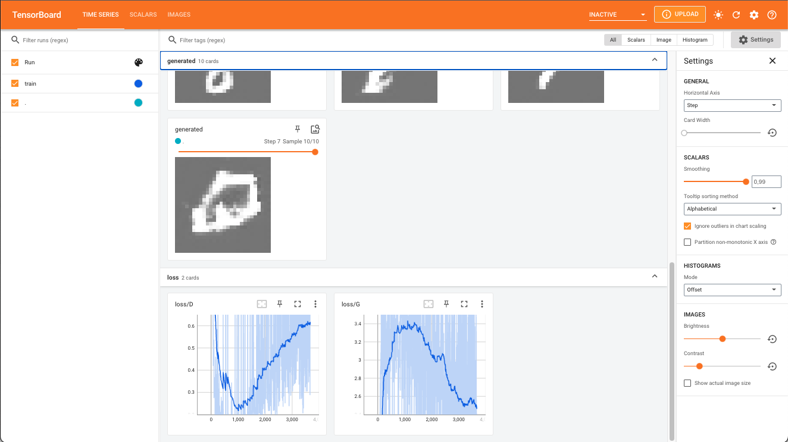

This example show how to use tfevents to log a training run of a DCGAN model. We use tfevents to log generated images and loss values during training.
Pointing TensorBoard to the logs directory will open a dashboard like the displayed below.

TensorBoard view from the DCGAN experiment
library(torch)
library(torchvision)
library(tfevents)
# Datasets and loaders ----------------------------------------------------
dir <- "./mnist" # caching directory
train_ds <- mnist_dataset(
dir,
download = TRUE,
transform = transform_to_tensor
)
test_ds <- mnist_dataset(
dir,
train = FALSE,
transform = transform_to_tensor
)
train_dl <- dataloader(train_ds, batch_size = 128, shuffle = TRUE)
test_dl <- dataloader(test_ds, batch_size = 128)
# Define the network ------------------------------------------------------
init_weights <- function(m) {
if (grepl("conv", m$.classes[[1]])) {
nn_init_normal_(m$weight$data(), 0.0, 0.02)
} else if (grepl("batch_norm", m$.classes[[1]])) {
nn_init_normal_(m$weight$data(), 1.0, 0.02)
nn_init_constant_(m$bias$data(), 0)
}
}
generator <- nn_module(
"generator",
initialize = function(latent_dim, out_channels) {
self$main <- nn_sequential(
nn_conv_transpose2d(latent_dim, 512, kernel_size = 4,
stride = 1, padding = 0, bias = FALSE),
nn_batch_norm2d(512),
nn_relu(),
nn_conv_transpose2d(512, 256, kernel_size = 4,
stride = 2, padding = 1, bias = FALSE),
nn_batch_norm2d(256),
nn_relu(),
nn_conv_transpose2d(256, 128, kernel_size = 4,
stride = 2, padding = 1, bias = FALSE),
nn_batch_norm2d(128),
nn_relu(),
nn_conv_transpose2d(128, out_channels, kernel_size = 4,
stride = 2, padding = 3, bias = FALSE),
nn_tanh()
)
self$main$apply(init_weights) # custom weight initialization
},
forward = function(input) {
input <- input$view(c(input$shape, 1, 1))
self$main(input)
}
)
discriminator <- nn_module(
"discriminator",
initialize = function(in_channels) {
self$main <- nn_sequential(
nn_conv2d(in_channels, 16, kernel_size = 4, stride = 2, padding = 1, bias = FALSE),
nn_leaky_relu(0.2, inplace = TRUE),
nn_conv2d(16, 32, kernel_size = 4, stride = 2, padding = 1, bias = FALSE),
nn_batch_norm2d(32),
nn_leaky_relu(0.2, inplace = TRUE),
nn_conv2d(32, 64, kernel_size = 4, stride = 2, padding = 1, bias = FALSE),
nn_batch_norm2d(64),
nn_leaky_relu(0.2, inplace = TRUE),
nn_conv2d(64, 128, kernel_size = 4, stride = 2, padding = 1, bias = FALSE),
nn_leaky_relu(0.2, inplace = TRUE)
)
self$linear <- nn_linear(128, 1)
self$main$apply(init_weights) # custom weight initialization
},
forward = function(input) {
x <- self$main(input)
x <- torch_flatten(x, start_dim = 2)
x <- self$linear(x)
x[,1]
}
)
# Initialize models
latent_dim <- 100
channels <- 1
G <- generator(latent_dim = latent_dim, out_channels = channels)
D <- discriminator(in_channels = 1)
# Set up optimizers
opt_D <- optim_adam(
D$parameters,
lr = 2*1e-4, betas = c(0.5, 0.999)
)
opt_G <- optim_adam(
G$parameters,
lr = 2*1e-4, betas = c(0.5, 0.999)
)
bce <- nn_bce_with_logits_loss()
# Training loop ----------
fixed_noise <- torch_randn(10, latent_dim = latent_dim)
for (epoch in 1:10) {
coro::loop(for (batch in train_dl) {
input <- batch[[1]]
batch_size <- input$shape[1]
noise <- torch_randn(batch_size, latent_dim)
fake <- G(noise)
# create response vectors
y_real <- torch_ones(batch_size)
y_fake <- torch_zeros(batch_size)
opt_D$zero_grad()
loss_D <- bce(D(input), y_real) + bce(D(fake$detach()), y_fake)
loss_D$backward()
opt_D$step()
opt_G$zero_grad()
loss_G <- bce(D(fake), y_real)
loss_G$backward()
opt_G$step()
log_event(
train = list(
"loss/D" = loss_D$item(),
"loss/G" = loss_G$item()
)
)
})
with_no_grad({
img <- G(fixed_noise)
img <- as_array((img[,1,,,newaxis] + 1)/2)
log_event(
generated = summary_image(img),
step = epoch
)
})
}